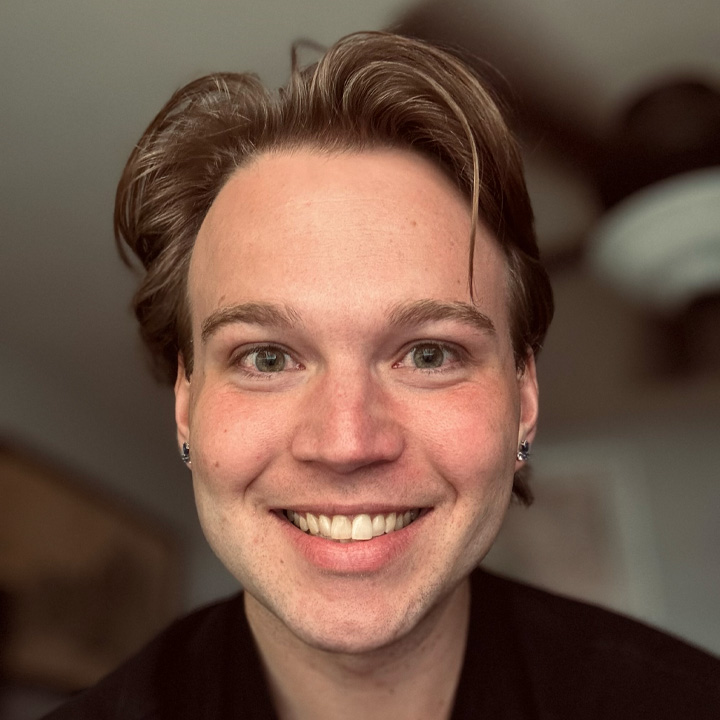

Jesse Murdock
eventrenders@gmail.com
(270) 227 - 7615
Chandler, AZ
Summary
I have helped produce over 1,000 events for Fortune 500 companies, Grammy Award winning artists, high profile individuals, and several non-disclosable agencies in the private and public sector. Through every step of my workflow, I create content and 3D models to ensure all my client's needs are handled. After having children, I decided to return to school at ASU to obtain a Master of Architecture degree where I was entrusted to manage the ASUniverse Digital Twin Project. In this XR Project, I led an interdisciplinary team of students in creating 1:1 replicas of Arizona State's Tempe Campus using Unreal Engine, Unity, and NVIDIA Omniverse.
Work History
- 2020-2024 Freelance Event Render Artist
- Fall 2023 Industrial Design, LLC
- 2021-2023 ASU Learning Futures
- 2021-2023 Nimblist
- 2015-2020 Everything Audio Visual
- Spring 2014 Kentucky Legislative Research Commission
- 2010-2015 Ponderosa Farms
Education
- Arizona State University - Master of Architecture
- Murray State University - Bachelor of Science in Economics
Sample Projects
- Capstone Master's Project - Santa Fe, New Mexico

- ASUniverse - Project Manager with ASU Learning Futures
- SF Mint - Creative Director/ 3D Modeler with Allegra Entertainment & Events
- Event Renders

- Zoom In the Metaverse - Creative Lead and Management Intern at ASU Learning Futures

Technology Design
For nearly a decade, Jesse has been working at the cutting edge of technology. This has evolved from AV and Lighting Design into full scale digital twins of universities, businesses, warehouses, manufacturing processes, products, and entertainment districts of cities.
Jesse received a Master of Architecture Degree from Arizona State University where he worked as a Digital Twin specialist for ASU Learning Futures (now called ASU Next Lab). He received a Bachelor of Science in Economics with a minor in Studio Art from Murray State University in 2014.
Additionally, Jesse is an Eagle Scout, member of the Honorable Order of Kentucky Colonels, and voted Most Dependable of his graduating class.
Bio
As a visual professional, I use images and illustration to show my thinking. Through every step of my workflow, I produce content and 3D models to ensure all of my client's needs are handled. I am used to working with tight deadlines, high profile individuals, and budgets of all sizes. Everyday I utilize the Architectural Imagination to transform spaces into new worlds.
During my tenure as Lead Project Manager and General Manager of Everything Audio Visual in San Francisco, California, I produced over 1,000 events and converted more than 50 of the Bay Area's premiere event venues into 3D as part of my initiative for better pre-production, planning and communication. I worked with several fortune 500 companies to produce high quality services for their events; including, Google, Facebook, Amazon, Airbnb, Reddit, GMC, Nike, Global Foundries, Auto Desk, and Netflix. I expanded upon this work during my time as a Production Designer with Nimblist utilizing Unreal Engine as a pre-visualization tool for stadium and arena tours.
Prior to my ventures in event design, I worked on Ponderosa Farms to pay my way through Murray State University where I studied Economics and Art. On the farm I learned carpentry, hydraulic systems, diesel mechanics, welding, fabrication, heavy machinery operation, landscaping, irrigation, aquaculture, commercial agriculture, and most importantly how to work until the job is finished. This engineering mindset shaped the way I design systems in events, construction, software, products and both physical and virtual environments.
During my senior year of study at MSU, I completed a highly selective internship for the budget review committee at the Kentucky Legislative Research Commission in the State Capitol Building. I worked with state senators and representatives to provide fiscal analysis for their proposed bills and help balance the commonwealth's budget. This led to receiving several leadership awards from the intern class and the appointment to the Honorable Order of Kentucky Colonels from Gov. Steve Beshear.